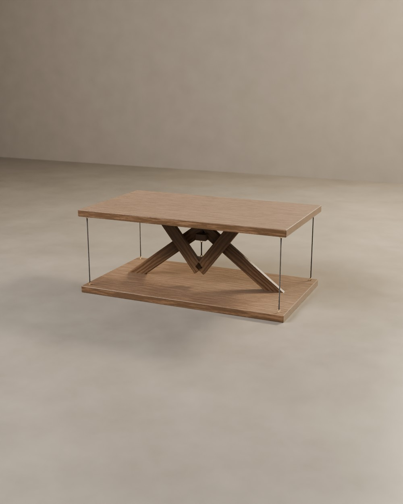

N°1 « Origine »
La première. Un triangle qui monte de la base, un triangle qui descend du plateau, une chaînette entre leurs pointes : le plateau flotte. Quatre chaînettes de laiton aux coins l'empêchent de basculer. Pin brossé, huilé.
Deux triangles de bois qui se croisent sans se toucher, un plateau, une corde centrale qui le porte, quatre haubans qui le tiennent. À partir de là, chaque pièce prend sa propre direction : une essence, un format, un plateau de céramique, un vers incrusté. Toutes ont été vendues. Elles restent ici comme répertoire : composez la vôtre.
La première. Un triangle qui monte de la base, un triangle qui descend du plateau, une chaînette entre leurs pointes : le plateau flotte. Quatre chaînettes de laiton aux coins l'empêchent de basculer. Pin brossé, huilé.
 Épuisé
ÉpuiséSoixante-quatre carreaux de céramique émaillée, vert bouteille et crème, enchâssés à fleur du chêne et cerclés d'un filet de laiton. Les cordes noires reprennent les cases sombres. On joue sur un plateau qui flotte.
 Épuisé
ÉpuiséFrêne brûlé à la flamme puis brossé : le veinage ressort en relief, le noir est profond et mat. Les liens sont des câbles de laiton gainé. La plus graphique de l'atelier.
 Épuisé
ÉpuiséSur le chant du plateau, en italique, incrusté de laiton : ce qui tient, tient par le vide. Le noyer est sombre, les cordes bordeaux. On peut y faire graver ses propres mots.
 Épuisé
ÉpuiséDeux disques d'olivier, le veinage le plus vivant qu'on connaisse. Basse et ronde, elle se glisse à côté d'un fauteuil. Quatre cordes de chanvre, une seule qui porte.

ÉpuiséLa tenségrité à l'horizontale : les triangles s'allongent, le plateau de noyer paraît posé sur rien. Quatre cordes noires presque invisibles. Le centre du salon.
 Épuisé
ÉpuiséÉtroite et haute, pour une entrée ou derrière un canapé. Les triangles occupent toute la longueur ; vue de côté, la console n'est qu'un plateau suspendu à un fil.
 Épuisé
ÉpuiséUn filet de laiton court au milieu du chant, et sous le plateau une lumière chaude, invisible, éclaire les triangles et les câbles. Le soir, la table devient lampe.
Format, essence, liens, plateau de céramique, gravure : le configurateur vous donne une estimation immédiate.